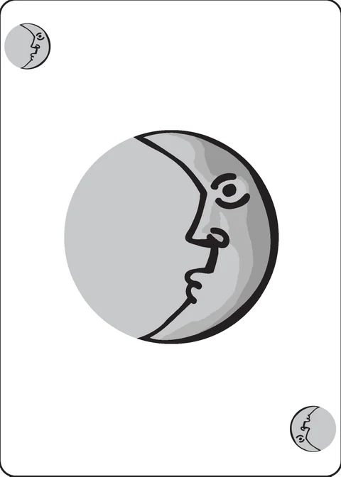

Gongor Whist
a solitaire trick-taking game
1 player quick no extra material P.D. Magnus
Gongor Whist is a solitaire trick-taking game in which you try to win tricks against a dummy hand. The trump is randomly determined by flipping over an Ace, but with every trick you have the option of randomly determining a new trump. Each pass through the deck is two hands; you play a second hand (called the aft hand) without reshuffling the cards.
Setup
- Make a score sheet with the numbers 0 through 7 on it.
- Separate the Aces from the basic deck. Shuffle them together in their own pile and flip up the top card. This determines the initial trump suit.
- Shuffle the rest of the deck together. Deal seven cards each into two face-down piles. One of these is your hand of cards. The other is the dummy.
- Looking at your hand, decide how many tricks you think you will be able to take. This is your bid for the hand.
- When you make your bid, check off that number on the score sheet. You may not bid that number of tricks again.
For example: You bid four tricks and make exactly four, check off 4. You may not bid four again.
Game play
Flip up the top card from the dummy hand. You must play a card that shares a suit with the dummy's card, if you have one; otherwise, play any card from your hand.
After playing your card, but before resolving the trick, you have the option of twiddling trump. Flip over the next card in the Ace stack. That suit is now trump, instead of the suit of the previous Ace. The new trump determines whether or not you win this trick and remains in effect until you twiddle the trump on a later trick. If you twiddle the trump when there are no cards left in the Ace stack, then there is no trump for the remainder of the hand; with no trump, the highest card that shares a suit with the dummy's lead wins.
- You win the trick if you played a trump and the dummy didn't, if you played a higher trump than the dummy, or if no trump was played but you followed suit with a higher card. Otherwise, you lose the trick.
Note that a card counts as a trump even when you play it for its other suit.
For example: The dummy plays the 
 ,
Ace
,
Ace is on top of the Ace stack, and you play
4
is on top of the Ace stack, and you play
4
 . Your card is trump, so you win the
trick.
. Your card is trump, so you win the
trick.
Regardless of who wins the trick, start the next trick by flipping over the top card from the dummy hand. Continue until you have resolved seven tricks and depleted both hands.
If you won exactly as many tricks as you bid, then you go on. If you won either more or fewer tricks, you have lost.
Set aside the tricks from this hand and, without reshuffling, deal the aft hand.
The aft hand
- Leave the Ace pile as it is. Using the remainder of the deck, deal again: Seven cards to yourself and seven to the dummy. (There will be two cards leftover. Set them aside without looking at them.)
- Bidding and game play for the aft hand are the same as for the fore.
- After completing the aft hand, reshuffle both the Ace pile and the main deck. Continue with another fore hand.
Succeeding at four fore hands and four aft hands requires making all eight possible bids. If you can do that, you win the game. If you ever fail to make even one bid along the way, however, you lose.
Point Scoring
This is a variant scoring rule that was used in the original version of the game.
Each hand, you may bid any number of tricks. If you win exactly as many tricks as you bid, then add your bid to your score. If you win either more or fewer tricks, subtract the number of tricks you won from your score.
For a beginner, it may be a challenge just to keep a positive score. If you can reach a total of 50 points in one sitting, then you can count it as a decisive win. If you need a further challenge, see how quickly you can get to 50; in principle, it can be done in just four passages through the deck.
Scoring in this app
This app uses the standard bid checklist scoring by default: the 0–7 score sheet is kept for you, each bid may be used only once in the game, one missed bid loses the game, and all eight bids win it.
To switch to point scoring, open the game and tap the Scoring button beside How to play, then choose “Point scoring to 50”. The choice is remembered on your device and applies to the game in progress as well as new ones. (The other choice, “Bid checklist (standard)”, puts it back.)
A few notes on how this app follows the rules above:
- Twiddle with the Twiddle trump button that appears once you have played a card and before the trick resolves; the trick is settled when you press Resolve the trick.
- Cards you cannot legally play are dimmed: you must follow suit whenever you hold a card in the dummy's lead suit.
- “Leave the Ace pile as it is” is taken literally: the ace pile and the trump in effect at the end of a fore hand carry straight into the aft hand, and only a fresh fore hand flips a new initial ace.
- An Undo button takes back the last thing you did, right back through the bid, for as long as the hand is still running.
Credits
Design: P.D. Magnus
The game is inspired by Richard Hutnik's Oneonta Whist.
The game originally appeared in the Decktet Book.
Gongor Whist was designed by P.D. Magnus. These rules are copied from the Gongor Whist page of the Decktet wiki (page revision 13, 23 April 2020) so that they can be read offline, and are used under the wiki's CC BY-NC-SA 3.0 licence. The cards themselves are by P.D. Magnus, 2008–2010, same licence.
Further reading: Gongor Whist at BGG · Oneonta Whist at BGG